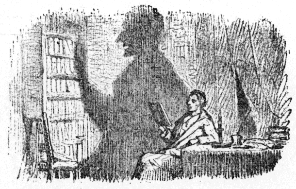
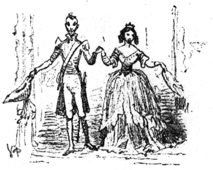

あつい国ぐにでは、お日さまが、やきつくように強く照りつけます。そこではたれでも、マホガニ色に、赤黒くやけます。どうして、そのなかでも、ごくあつい国では、ほんものの黒んぼ色にやけてしまうのです。
ところが、こんど、寒い北の国から、ひとりの
学者が、そういうあつい国へ、そんなつもりではなく出てきました。この人は国にいるじぶんの気で、こちらにきても、ついそこらをぶらつくことができるつもりでいました。でもさっそく、その考えはかえて、この人も、この国のせけんなみに、やはりじっとしていなければなりませんでした。どこの家も、それは、
窓も戸も、まる一日しめきりで、中にいる人は、ねているのか、どこかよそへ出ているとしかおもえないようでした。この人の
下宿している高いたてもののつづきのせまい通りは、おまけに朝から晩まで、日がかんかんてりつけるようなぐあいにできていて、これはまったくたまらないことでした。
さて、さむい国からきた学者は、年は若いし、りこうな人でしたが、でもまる一日、にえたぎっているおかまの中にすわっているようで、これにはまったくよわりきって、げっそりやせてしまいました。その
影までが、ちぢこまって、国にいたじぶんから見ると、ずっと小さくなりましたが、お日さまには、影までいじめつけられたのです。――で、やっと
晩になって、お日さまが
沈むと、人も影もはじめていきをふき返すようでした。さて、あかりがへやのなかにはいってくると、さっそく影はずんずんのびて、
天井までつきぬけるほどたかくなります。それはまったく見ているとおもしろいようでした。影は元気をとりかえすつもりか、のびられるだけたかく、せいのびするように見えました。学者は、
露台へ出ると、のびをひとつしました。きれいな大空の上に、星が出てきて、やっと生きかえったようにおもいました。町じゅうのバルコニにも――あつい国ぐにでは、窓ごとにバルコニがついているのですが、――みんなが新しい空気をすいに出てきました。
いくらマホガニ色にやけることにはなれても、すずむだけはすずまずにはいられません。すると上も下もにぎやかになってきました。まずくつやと
仕立屋が、それから町じゅうの人が、下の
往来に出てきました。それから、いすとテーブルがもち出されて、ろうそくが、それは千本という数ものろうそくがともされます。話をするものもあれば、うたうものもあり、ぶらぶらあるくものもあります。馬車が通ります。ろばがきます。チリンチリン、鈴をつけているのです。死人が
讃美歌に送られておはかにはいります。
不良どもは往来でとんぼをきります。お寺のかねがなりわたります。いやはや、どこもここも、大にぎやかなことでした。ただ、れいの外国から来た学者のすまいの、ちょうどまん前のたてものだけは、いたってしずかでしたが、やはり住んでいる人はあるようで、バルコニには花がおいてありました。それがやきつくような日の下で、美しく咲いているところを見ると、水をやるものがなければ、そうはいかないはずですから、たれか人がいるにはちがいありません。
晩方になるとその
戸は半びらきにあきました。けれど、うちの中はとにかく、おもてにむいたへやだけはまっくらで、そのくせずっと
奥のへやからは、おんがくがきこえました。外国の学者は、このおんがくを、じつにいいものだとおもっていました。でも、それはこの人だけの
想像でそうおもっていたのかも知れません。だってこの学者は、日さえぎらぎら照らなければ、そのほかはこのあつい国のものを、なにによらず、すばらしいとおもっていたからです。
下宿の
主人にきいてみても、前の家をたれが
借りているのか知りませんでした。なにしろ、にんげんの
姿をみたことがないというのです。さて
音楽についていえば、この下宿の主人には、それはとても、たいくつせんばんなものにおもわれていました。
主人がいうには、「どうもだれかあの家に人がいて、どうやってもひきこなせないひとつの
曲を、
始終いじくりまわしているのですね、――それはいつもおなじ曲なのです。『どうでも
弾きこなす』といういきごみらしいが、いつまでひいていても、ものにはならないのですよ。」
ある晩夜中に、この外国の学者は、ふと目をさましました。バルコニの戸をあけはなしたまま、ついそこにねむってしまったのです。すると風がきて、はなの先のカーテンを吹き上げました。そのとたん、ふしぎな光が、すぐ前の家のバルコニから、さしこんできたようにおもわれました。そこにあるのこらずの花が、じつにきれいな色をしたほのおのように、かがやいて見え、その花のまん中に、美しいすらりとした姿の少女が立っていましたが、この人のからだから、ふしぎな光がさしてくるようにおもわれました。学者はひどく目がくらくらするようでしたが、むりやり大きい目をあけると、それでやっと目がさめました。あわててベッドからとびおりて、そうっと、カーテンのうしろへはいっていきました。けれど少女の姿はなく、光も
消えていて、花もべつだんかがやいてもいず、ただいつものようにきれいに咲いているだけでした。戸は
半開きになっていて、なかから音楽が、いかにもやさしく、いかにもあまくうつくしく、ほれぼれと引きこまれるような
音にきこえていました。これこそまったく
魔法のようなわざでした。たれがそこに
住まっているのでしょう。いったい、どこが入口なのでしょう。なぜといって、下の往来にむかったほうは、店つづきで、どうもそこを通って、中へはいけないようになっていました。
ある晩、外国の学者は、バルコニに出ていました。すぐうしろのへやには、あかりがかんかんしていました。ですから、この人の影が、むこうがわの家のかべにうつるのは、まず、あたりまえの話でした。そう、そこで影は、ちょうどむこうのバルコニの花と花のあいだに、すわっていることになりました。そして、この学者がからだを動かすといっしょに、影も動きました。
そのとき、この学者はいいました。
「どうもこうしていると、わたしの影だけが、むこうの家にひとり生きて住んでいるような気がする。ほらあの通り、ぎょうぎよく、花のあいだにじっとこしをおろしている。戸は半分あいているだけだが、影はなかなかりこうものだから、ずんずん、中へはいっていって、そこらをよく見てまわって、帰ってきて、見たとおりを話してくれるにちがいない。そうだ、ぼくの
影法師、おまえはそんなふうにして、
一働きしてきてもらいたいものだ。」と、学者は、じょうだんにいいました。「どうかうまくするりとはいって見てもらいたい。さあどうだ、いってくれるかい。」こういって、学者は影に、あごでうなずきますと、影もうなずきかえしました。「さあ、いっておいで。だが
鉄砲玉のお使はごめんだよ。」
そこで、学者は立ちあがりました。すると、影も、むこうの家のバルコニで立ちあがりました。それから、学者がうしろをむくと、影がそれといっしょに、うしろむきになってむこうの家の半開きにした戸の中へ、すっとはいっていったところを、たれかみていたら、そこまでみとどけたはずでした。しかし学者は、そのままずっとへやへはいって、長いカーテンをおろしてしまいました。
そのあくる朝、学者は
喫茶店へ、新聞をよみに出かけました。
それでひなたへ出ますと、「おや、どうした。」と、この人はいいました。「はて、おれには影がないぞ。するとほんとうに、ゆうべ影のやつ、出かけていって、あれなりかえってこないのだな。いまいましいことになった。」
さあ、学者はむしゃくしゃしてきました。でも、それは影がなくなったためというよりは、影
＊をなくした男のお話のあるのを知っているからです。寒い国ぐにの人たちは、たれもその話を知っていました。ですから学者が国へかえって、じぶんのじっさい出あった話をしても、きっとそれは人まねだといってしまわれるでしょう。そんなことをいわれるわけはない。だから、この話はまるでしないでおこうと、おもいました。これはいかにももっともな考えでした。
＊ドイツのシャミソー作小説「影をなくした男」のこと。
その晩、学者は、またバルコニに出ていました。まうしろにあかりをつけておきました。それは影というものは、いつも主人を光の前に立てて、そのかげにいたがるものだということを知っていたからですが、どうも、やはりさそいだせませんでした。ちぢんでみたり、せいのびしてみたりしましたが、やはりかげはありません。まるであらわれてこないのです。
「えへん、えへん。」知らせてみてもいっこうだめでした。どうも
ごうはらなことでした。
けれど、さすがに
熱い国です。どんなものでも、じつに
成長がはやいので、
一週間ばかり間をおいてひなたへ出てみますと、あたらしい影が、足の先から
生えて大きくなりかけているので、すっかりうれしくなりました。してみる、と
［＃「してみる、と」はママ］影の根が残っていたものとみえます。それで三週間もたつと、もうかなりな影になり、いよいよ北の国にかえるじぶんには、とちゅう旅の間にも、ずんずん成長して、しまいには、あんまり長すぎもし、大きすぎもして、もう半分でたくさんだとおもうくらいになりました。
こうして学者は国へかえると、この世の中にある
真実なこと、
善いこと、美しいことについて本を書きました。さてその後、日が立って、月がたって、いくねんかすぎました。
ある晩、へやの中にいますと、そっと、こつこつ、戸をたたくものがありました。
「おはいりなさい。」と、学者はいいましたが、たれもはいってくるものはありません。そこで戸をあけますと、すぐ目の前に、それはじつに、とほうもなくやせた男が、ひょろりと立っていたので、すっかりおどろいてしまいました。そのくせ男は、みたところ、なかなかりっぱな、品のいい身なりで、いかさま身分のある人にちがいありません。
「しつれいながら、どなたでございましょうか。」と、学者はたずねました。
「いや、ごもっともで。」と、そのりっぱな
客人はいいました。「たぶんごしょうちでしょう。なにしろこのとおり、からだができましてね。おいおい肉がつき、
衣服も身にそったというわけです。あなたはおそらく、ゆめにもわたしが、このような安らかなきょうぐうにいようと、お考えになったことはありますまいな。あなた、ごじぶんのむかしの
影法師をお見忘れですか。そう、あなたはわたしがまたかえってこようなどとは、むろんお考えにならなかったでしょう。あなたにおわかれしてから、ばんじひじょうにこうつごうに運びましてね。わたしはどの点より見ても、しごく
有福になったのです。お
給金を
払いもどして、一本だちの
人間にしていただこうとおもえば、いつでもそのくらいのことはできるのですよ。」
こういって、その男は、とけいにつけた
高価なかぎたばを、がちゃがちゃと
鳴らし、首のまわりにかけた、どっしりおもい金ぐさりのあいだに、手をつっこみました。その指には、一ぽんのこらず、ダイヤモンドの
指輪がきらきら光っていました。しかも、それはみんなほんものです。
「いやはや、これはいったい、どうしたということだ。」と、学者はいいました。
「さようさ、まず
世間並のことではありませんな。」と、影はいいました。「でもあなただって世間並のほうじゃありませんよ。ごぞんじの通り、わたしはこどもの時から、ずっとあなたの足あとについてあるいてきました。そしてあなたが、わたしが
十分大きくなって、もうひとりで世間あるきができるとお考えになったとき、さっそくわたしはじぶんの道をいくことにしました。わたしはおよそかがやかしいきょうぐうに身をおくようになりましたが、でもやはり、あなたがおなくなりにならないまえにぜひもういちどお目にかかりたい、いわば、あこがれのようなものをいだいていました。あなたも、いずれお死ににならなければならないでしょうし、わたしも
故郷忘じがたしで、このへんをもういちど見ておきたいとおもったのです。――あなたがもうひとつ、ほかの影法師をおやといになったことも、わたしは知っています。その影法師になり、またあなたになり、なにがしか借があれば、お支払いしましょうか。どうぞごえんりょなくおっしゃってください。」
「でもきみ、それはほんとうなのかい。」と、学者はいいました。「どうもまったくふしぎだよ。じぶんのむかしの影法師が、にんげんになって、またかえってくるなんて、おもいもつかんことだ。」
「なにほどお
支払したらいいか、おっしゃっていただきたい。」と、影はいいました。「なにしろ、わたしは人に借をのこしておくのが、きらいな
性分でして。」
「なんだってそんなことをいうんだ。」と、学者はいいました。「このばあい、
貸借なんて
問題のありようはずがないさ。ほかのにんげんどうよう、きみは自由だよ。きみの
幸運にたいして、わたしはひじょうに、よろこんでいる。きゅう
友、まあ、かけたまえ。そしてそのご、どういうことがあったか、あちらのあつい国ぐにで、ことに、あのむこうがわの家で、君の見たことはなにか、そんなことをすこし話してくれたまえ。」
「はあ、お話し申しましょう。」と、影はいって、こしをおろしました。「ところで、あなたにもお約束ねがいたいのですが、この町のどこぞで、わたしに出あったばあい、だれにも、わたしがむかしあなたの影法師であったということは、けっして話さないことにしてください。わたしは
結婚しようと考えているのです。一家をやしなうぐらい、今ではなんでもないのですから。」
「それは安心したまえ。」と、学者はいいました。「きみの
素性がなんであるか、だれにもいうものではない。このとおり手をさしのべて約束する。ひとりの男にひとつのことば。男子に
二言なし。」
「ひとつの影にひとつのことば。影に二言なし。」と、影もいいました。影としては、こういわなければなりますまい。
さて、影がいかにもにんげんになりきっていたのは、まったく、おどろくべきことでした。上も下もすっかり黒ずくめで、それがとてもじょうとうのきれで、その上にエナメルのくつをはき、押しつぶすと、てんじょうと
縁鍔だけになるぼうしをかぶっていました。そのほかとけいの
飾金具、首にかけた
金鎖や、ダイヤモンドのゆびわなど、すでにごしょうちのとおりですから申しません。じっさい、影は、すばらしくいい身なりをしていました。どうやら影が人間らしくとりつくろっていられたのも、まったくその身なりのおかげでした。
「ではお話し申しましょう。」と、影はいって、エナメルのくつをはいた足をのばすと、学者の足もとに、
むく犬のようにうずくまっている
しんまいの影の
腕に、力いっぱいふんづけるように、それをのせました。これはわざと
尊大ぶってしたことか、たぶん、しんまいの影を、
永劫じぶんに頭のあがらぬものにしておくつもりか、どちらかなのでしょう。でも横になった影は、そばでよく話が聞きたいので、ごくおとなしく、じっとしていました。この影も、いつかこんなふうに自由になって、主人風が
吹かされようか、それを知りたいとおもっていました。
「れいのむこうがわの家には、だれが住んでいたかご存じですか。」と、影はいいました。「そこに住んでいたのは、すべてのものの中で一ばん美しいものでした。あれは
詩でしたよ。わたしはあの家に三週間もとまっていましたが、その間にまるで三千年もそこでくらして、昔の人の書いたものつくったもののこらず読みつくしたかとおもうほど、急になにかがしっかりしてきました。なにしろそれはお話するとおり、まちがいのないことなんでして、わたしはなんでも見て、なんでも知っていますよ。」
「詩だったか。」と、学者はさけびました。「そうだろう、そうだろう。――詩はどうかすると
隠者のように大都会に住んでいる。うん、詩だったか。そうだ、わたしも、ほんのちらりとその姿を見たには見たが、眠りが
目ぶたをふさいでしまったのさ、詩はバルコニに立っていて、まるで
極光のように光っていた。話しておくれ。話しておくれ。おまえは、バルコニの上に立っていた、戸をぬけて中へはいっていった、そしてそれから――。」
「入口のへやに入りました。」と、影はいいました。「あなたはいつもじっとこしをかけてそこのへやのほうを見ていましたね。あそこには、あかりというものがなく、まあうすあかりといった感じでした。でもそのうしろの戸はあいていて、それから順じゅんにへやと広間のならんだずっと奥まで見とおせたのですが、そこはまひるのようにあかるくて、かりにわたしがいきなりその女のひとのすぐそばまでいったとしたら、そこのおびただしい光にうたれて、死んでしまったことでしょう。ところがわたしは考え深く、ゆっくりかまえていたのです。人はだれでもこうありたいものですよ。」
「すると、おまえはなにを見たのだね。」と、学者はたずねました。
「なにもかも見てしまったのです。それをあなたにお話しましょう。ところで――これはなにもわたしがこうまんにかまえるわけではないのですが、しかし――自由人として、またわたしの
所有する
知識にたいしても――まあ、そうとうたかい今の身分やきょうぐうのことは申しますまいが――どうかおまえよばわりだけは、やめていただきたいものですな。」
「やあ、これは
失策でした。」と、学者はいいました。「昔の
習慣は、あらためにくいものでしてね。――いや、おっしゃるとおりだ。よろしい、よく気をつけましょう。ところで、あなたのごらんになったことを、のこらずお話しねがいたいのだが。」
「話しますとも。」と、影はいいました。「なにしろ、なにもかも見て知っているのですから。」
「ではいちばんおくの広間はどんなようすでしたか。」と、学者はいいました。「若葉の森の中にでもいるようでしたか。
神聖な
教会の中にでもはいったようでしたか。高い山の上に立って、星あかりの空を見るようでしたか。」
「なにもかも、そこにはありましたよ。」と、影はいいました。「もっとも、すっかりその中にはいって見たわけではないのです。わたしはいちばんてまえの、うすあかるいへやに、じっとしていたのですが、それがこの上もないよいぐあいで、なにもかも見、なにもかも知ったのです。わたしは入口のへやで、いわば、詩の大庭にいたわけです。」
「だが、なにをそこで見ましたか。
太古の神がみのこらずが、その大きな広間をとおっていきましたか。
古代の
英雄が、そこで
戦っていましたか。かわいらしいこどもたちが、そこであそびたわむれていて、その見た夢の話でもしていましたか。」
「わたしは申しますが、わたしはそのへやにいたのですよ。ですから、そこで見るべきものは、すべてわたしが見たということはおわかりでしょう。かりにあなたがそこにやってこられたとすれば、もうそれなり人間ではいられないところでしたろう。だが、わたしは人間になったのですよ。それと同時に、わたしはじぶんのおくのおくにかくれた
本性もわかり、じぶんの
天分もわかり、じぶんが詩と
近親の
関係にあることも知りました。まだあなたのおそばにいたころ、わたしはそんなことは考えませんでした。ですが、あなたもごしょうちでしょう、太陽があがるとき、また太陽が沈むとき、いつもきまって、わたしはすばらしく大きくなりましたね。月の光のなかでは、わたしはあなた自身よりも、かえってはっきりとみえたくらいでした。そのころは、じぶんの
本性がよくわかってはいなかったのです。けれど詩の入口で、それがはじめてあきらかになったのです。――わたしは人間になりました。――一人前になって、わたしはまたかえっていったのですが、もうその時は、あなたはあつい国のどこにもおいでがなかった。さて、人間になってみると、わたしは前のようなかっこうであるくのが
恥かしくなりました。くつもないし、着物もないし、すべて人間を人間らしくみせる
装飾品がたりないのです。わたしはかくれました。まったく、あなただから打ちあけていうのですよ。けっして本に書いていただきたくないが、わたしは菓子売女の前掛の下にかくれたのです。その女は、どんなに大きなものがかけこんだか、まるで気もつきませんでした。晩になってはじめて、わたしは外へ出ました。月の光の中を、わたしは
往来じゅうかけまわりました。わたしは長ながとかべにからだをのばしますと、とても気持よく背中をくすぐられるようでした。わたしは高くなったり低くなったり、かけずりまわって、一ばん高い
窓から
広間の中をのぞき込んだり、また屋根の上からだれものぞけないところをのぞきこんで、だれも見たこともないこと、見てはいけないことまで見ました。つまりそれはつまらない世界でした。もしも人間であるということが、なにかいいことのようにおもわれていなかったなら、わたしは人間なんかにはならなかったでしょう。わたしは
妻や
夫や
両親や、かわいらしい天使のようなこどもたちの間にも、まさかとおもわれるようなことが、行われているのを見ました。――またわたしは、」と、影はいいました。「人間が知ってならぬことで、そのくせ知れれば知りたいだろうと思うことを、たとえば、近所の人たちのしている
悪事なども見ました。そのとおりしんぶんに書いたら、どんなにか読者にうけることでしょうが、わたしはじかにかんけいのある
当のその人だけに手紙をやりました。だから、わたしがいく先ざきの町では、
大恐慌をおこしていました。
教授たちは、わたしを教授にしてくれましたし、
仕立屋はわたしに新しい着物をくれました。それで、わたしはりっぱな身なりをしているのでさ。
造幣所長はわたしのために、
金貨を
鋳てくれました
［＃「くれました 」はママ］それから婦人たちは、わたしの男ぶりをほめてくれました。まあ、そういうわけで、わたしはごらんのとおりのにんげんになったのです。しかし、もうおいとましましょう。名刺をおいていきます。ひなたがわに住んでいます。雨ふりの日はいつも
在宅です。」
こういって、影は出ていきました。
「なにしろこれはめずらしいことだ。」と、学者はいいました。
年月がたちました。すると、影はまたやってきました。
「やあ、その後いかがです。」と、影はたずねました。
「やあ。」と。学者はいいました。「わたしは
真善美についてかいています。けれどだれもそんなことに耳をかたむけてはくれないので、わたしはまったく
絶望していますよ。なにしろこれはわたしにはだいじなことなので。」
「わたしにはいっそうなんでもないですね。」と、影はいいました。「わたしはこのとおり肥えてあぶらぎっています。まあそうなるように心がけねばならん。そうだ、あなたはまだ世間がわかっていないのだ。そんなことをしていると病気になりますよ。
旅をするんですな。わたしは、この
夏旅行をやりますが、いっしょにいかがです。わたしも道づれをひとりほしいところだ。あなたはわたしの影になって
同行してください。あなたを
同伴することは、ひじょうに、ゆかいなことにちがいない。
旅費はわたしが持ちますよ。」
「どうもそれはすこしひどいな。」と、学者はいいました。
「それは考えようしだいです。」と、影はいいました。「旅行すれば、あなたはまたずっとじょうぶになりますよ。わたしの影になってくだされば、旅中一切、あなたは一文いらずですよ。」
「そりゃひどすぎる。」と、学者はいいました。
「しかしそれが世間ですよ。」と、影はいいました。「どこまでいってもやはりそうでしょう。」
こういって影はいってしまいました。そののちも学者はいっこう
運よくはなりません。悲しみと、なやみにせめつけられ、真善美についてなにをいったところで、おおくの人には、
牝牛にばらの花をくれたようなものでした。――とうとう学者は、ほんとうに病気になってしまいました。「まあ、あなたは影のようだ。」と、人にいわれて、学者はぞっとしました。このことではべつのいみを考えていたからです。
「それはどうしても
温泉に行くほかありますまい。」と、影はまたたずねてきて、こういいました。
「ほかにしようがないのです。昔のおなじみがいに、わたしがつれていってあげましょう。旅費はわたしが出しますから、そのかわりあなたは旅行記をかいて、道みちわたしをたのしませてください。わたしは温泉にいこうとおもうのです。とうぜん
生えなければならないひげが生えないのは、これも病気なんでしょう。にんげん、ひげがなければね。まあよく思案して、わたしのいうとおりにおしなさい。道づれになって旅行するのですね。」
こうしてふたりは旅に出ました。影がいまは主人で、もとの主人がいまは影でした。ふたりはいっしょに馬車を走らせたり、馬にのったり、あるときは、そのときの太陽の位置しだいで
並んだり、前になったり、
後になったりしました。影はいつも、つとめていちだん上に立つように心がけていました。そういうことを学者はたいして気にしません。この人はたいへん心の
善良な、またなみはずれておだやかなやさしい人でした。それですから、ある日、学者は、影にこんなことをいいました。
「われわれはおたがいに、こうして旅の道づれになったのであるし、またこどもの時からいっしょにそだったなかでもあるのだから、ひとつ、きょうだいのさかずきをくみかわして、おれ、おまえで行こうじゃないか。それでいっそう
親密にもなれよう。」
「きみのいうことにも
一理はある。」と、いまでは
本式に主人になりすました影がいいました。「だいぶ
親切に
卒直にいってくれられたのだから、わたしも、やはりしんせつに卒直にいこう。きみも学者だから、いかに
生まれた
天性がふしぎなものだかごぞんじだろう。
人によっては、ねずみ色の紙をつかめば、病気になるという者がある。ガラス板の上を
釘で引っかくと、骨のずいまで身ぶるいがくるという者もある。さいしょきみの下に使われていたときも、わたしはきみに、おまえといわれると、やはりおなじ感じがして、いわば地面におしふせられるようにおもったものだ。これはただ
感情の上のことで、べつだん
尊大ぶるわけではないのだが。どうもわたしは、きみがわたしのことをおまえというのを、
許すわけにいかないのだ。けれどもわたしのほうからは、むしろ、きみをおまえと呼びたいのだ。それで、ともかく、きみののぞみもなかば達せられるわけだ。」
それからは、影は、いぜんの主人を、「おまえ」と呼びました。
「とにかくこれはひどい話だ。」と、学者はおもいました。「わたしのほうからは、あなたといわなければならないのに、あいつのほうからは、きみとか、おまえとかと呼ばれるんだから。」と、そうはおもいましたが、こうなっては、いやでもがまんしなければなりませんでした。
そこでふたりは温泉場にやってきました。そこにはたくさん外国人もきていましたが、そのなかにある国のおそろしく美しい王女が、ひとりまじっていました。その人の病気というのは、なんでもあまり物がはっきりするどく見えるので、そのためひどく落ちつかないで困るということでした。で、さっそく王女は、この
新来の
客人が、ほかのれんじゅうとはまったくかわっていることに気がつきました。
「あの人はひげをはやすためにきたということだが、わたしの見るところでは、ほんとうのわけは、じぶんの影がうつせないところにあるらしいわ。」
そこで王女は、
好奇心がうごいたので、
遊歩場であうとさっそく、この
外国紳士に、話しかけました。なにしろ王さまのおひめさまともなれば、たいして人にえんりょする必要はありませんでした。そこで、王女はいいました。
「あなたの病気って、ごじぶんの影がささないからなんでしょう。」
「どうも殿下には、もうだいぶおよろしいほうに
拝察いたされますな。」と、影はこたえました。
「殿下には、なにかがあまりはっきりお目に入るのが、ご病気だということにしょうちいたしておりますが、もうそれならばとうにご
全快です。どうして、わたくしには、世にもふしぎな影があるのでしてね。それでは、いつもわたくしといっしょにあるいております
人物が、お目にとまらないのでございますか。およそほかの者は
普通の影ですましているのですが、どうもわたくしはそれがきらいなのです。よく
召使の
仕着に、じぶんの
着料よりもじょうとうな布をもちいるものがありますが、わたくしもじぶんの影を人間にしたててあるのです。いや、そのうえ、ごらんの通り、そこへさらに、ひとつの影をすら、つけてやってあるのです。ずいぶん費用のかかることですが、どうも
一風かわったことが好きな
性分なのでしてね。」
「そうかしら。」と、王女はおもいました。「わたしほんとうによくなったのかも知れないわ。なにしろこの温泉は、どこよりも一ばんいい温泉よ。ここの水には、いまどきまったくたいした
利目があるわ。でも、わたしこの温泉を立っていこうとはおもわない。このごろやっと、ここがおもしろくなりかけたのだもの。あの外国人、ずいぶんわたし気に入ったわ。ただあの人、ひげが生えないといいわ。なぜといって、そうすると、またかえっていってしまうでしょうから。」
その晩、大きな
舞踏室で、王女は影とダンスしました。王女も身が軽いのに、でも影はもっともっと
身軽で、こんなに身の軽い人をあいてに、王女はまだおどったことはありませんでした。王女は影に、じぶんがどこからきたか話しました。影はその国を知っていました。影はそこにいたことがあったのです。もっともそれは、王女のるすのときでした。影はお城の窓を下からも上からものぞいて見ましたし、あのこと、このこと、いろいろ見ていました。そこで、影は王女の問に答えたり、おやと思わせるようなことを、ほのめかしたりすることができました。それで王女は世界じゅうに、この人ほど
賢い人はないと考えました。なによりもその
知識に、たいした尊敬をもつようになりました。ですから、またいっしょにダンスしたとき、王女は、すっかり影が好きになってしまいました。それを影はまたじゅうぶんに見ぬくことができました。というわけは、王女はしじゅう穴のあくほど影を見つめていたからです。それからもういちどおどったときに、王女はあやうく恋をうちあけようとしたくらいですが、考えぶかい娘でしたから、生まれた国のことや、じぶんの
治める王国のこと、いつかはじぶんが上に立つはずの
人民たちのことをおもって、えんりょしたのです。
「賢い人だとおもうわ。」王女は、腹の中で考えました。「それはいいわ、それからダンスがとてもすてきだわ。それもまたいいわ。だがあの方、いったい深い学問がおありかしら、これはどうしてだいじです。どうしてもためしてみなければならない。」
そこで王女は、影に、そろそろと、およそむずかしい問題をもちかけ始めました。それは王女自身にも答えられそうもないものでした。で、影もだいぶみょうな顔になりました。
「この問題にお答えがおできにならないの。」と、王女はいいました
［＃「いいました」はママ］
「そのくらい、こどものころからならっております。」と、影はいいました。「あのとびらのところにいるわたしの影にだって、つい
造作なくできましょうよ。」
「あなたの影にですって。」と、王女はいいました。「それは、まあずいぶんおめずらしいわ。」
「かならずできるとは、うけあえませんがね。」と、影はいいました。「長年わたしのそばについていて、いろいろと、聞きかじっておりますから、たぶんこたえられるとおもいます。――たぶん、だいじょうぶだとおもいます。しかし、ご注意もうしあげますが、どうか女王殿下、かれはにんげんとおもわれることを、たいそうとくいにいたしておりますから、かれをじょうきげんにいたしておきますには――またじゅうぶんに答えさせますには、ぜひそういたさせる必要がございますので――それにはじゅうぶん、にんげんらしくとりあつかってやらねばならないのでございまして。」
「けっこうです。」と。王女はいいました。
そこで、王女は
戸口にいる学者の所まで出かけていって、太陽や月やにんげんの内部と外部のことで語りあいました。そして学者は、いかにもはっきりと、りっぱに答えました。
「こんなかしこい影を持っていらっしゃるなんて、なんというえらい方だろう。」と、王女は考えました。「あのような人をおっとにえらんだならば、わたしの人民のためにも、王国のためにも、まったく幸福なことにそういない。――わたし、そうしよう。」
そこで王女と影とは、さっそくおたがいに意見がいっちしました。でも帰国するまでは、たれにもけっしてこのことを知らせないことにしました。
「これはだれにも、わたしの影にも申しません。」と、この影はいいました。それにはじぶんだけのおもわくもありました。
やがてふたりは、王女のじぶんのうちでもあるし、また王女として
治めてもいる国へやって来ました。
「ところで、おまえ。」と、影は学者にいいました。「いよいよわたしもまあ人なみに、この通り幸福にもなり、勢力もついたのだから、おまえにもなにかとくべつなことをしてあげたいと思う。おまえには、ずっとお城の中に住んで、わたしのそばにいてもらうのだ。いっしょの
王室馬車に乗せてやって、
年金十万ターレル払うことにする。そのかわり、だれからも、おまえは影法師と呼ばれていなければならない。また、かりにも、もとはにんげんであったなぞといってはならない。それから、一年に一回、わたしが、バルコニのひなたに出て、みんなに姿を見せているとき、いかにも影らしく、わたしのあしもとに寝ていなければならない。じつをいうと、わたしは王女と
結婚するのだ。今晩がその結婚式だ。」
「いや、それはしかしひどすぎる。」と、学者はいいました。「それは困る。それだけはごめんです。それではこの国じゅうの人民をはじめ、王女まであざむくことになる。わたしはみんないってしまう。にんげんはわたしで、きみはただの影法師が、にんげんの着物を着ているにすぎないことを。」
「だれがそんなことを信じるものか。」と、影はいいました。「わからぬことをいうなら、番兵を呼ぶだけだ。」と、影はいいました。
「わたしはすぐ王女のところへいく。」と、学者はいいました。
「いや、わたしがさきに行くよ。」と、影がいいました。「そして、おまえをろうやにいれてやるよ。」
で、その通りになりました。それは、王女のお
婿さまになる人のいうことに、むろん、番兵たちは
従ったからです。
「あなたはふるえていらっしゃいますね。」と、影がはいって来たとき、王女はいいました。
「なにかあったのですの。こんばん結婚式をあげようというのに、ご病気ではこまりますわ。」
「どうもこんなおそろしいめにあったことはありません。」と、影はいいました。「まあどうです――かわいそうに、まったくあんな影法師の頭には、しょい切れない重荷でした――いやはやどうです。わたしの影法師は気が
狂ってしまったのです。かれはじぶんがにんげんで、そして、わたしが――まあ――どうです――わたしが、かれの影法師だと考えているのですよ。」
「まあ、おそろしいことね。」と、王女はいいました。「でもろうやにいれてあるでしょうね。」
「もちろんです。どうも
正気にはもどらないのじゃないかと心配しています。」
「まあ、かわいそうな影法師ですこと。」と、王女はさけびました。「ずいぶん不幸ですわ。それをはかない命から自由にしてやるほうが、ほんとうの
功徳というものでしょうね。わたしの考えでは、どうやらそれは、そのままそっと片づけてしまうのが、なによりのようですわ。」
「それはいかにもつらいことです。なにぶん
忠義な
召使でしたから。」こう影はいって、ためいきをつくようなふうをしました。
「りっぱなお
気性ですわ。」と王女はいいました。その晩、町じゅうあかりがついて、ドーン、ドーン、とお祝の大砲がなりひびきました。それから兵隊は
捧げ
銃しました。
結婚式がおこなわれたのです。王女と影とは、バルコニに姿をあらわして、人民たちにあいさつをたまわり、もういちど人民たちから万歳の声をあびました。

学者は、まるでこのさわぎを聞かなかった、というわけは、そのまえ、もうとうに死刑にされていたからです。